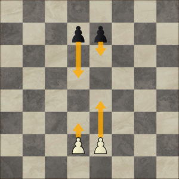
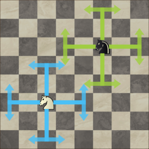
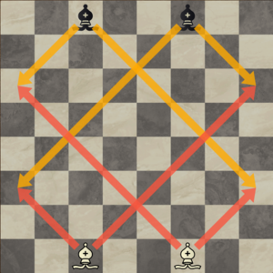
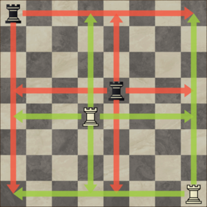

¿Cómo jugar al Ajedrez?
Para comenzar este camino de aprendizaje, empezaremos por lo básico. En el Ajedrez juegan piezas blancas contra piezas negras, cada una juega con 16 piezas, las cuales son (en órden de importancia) las siguientes:
- Rey
- Dama
- Torres
- Alfiles y caballos
- Peones
Cada una de las piezas detalladas arriba tienen su propio valor, valor que puede variar dependiendo de la situación, pero trataremos de explicarnos lo mejor posible usando una tabla.
| Pieza | Valor en apertura | Valor en medio juego | Valor en finales | Valor en final de peones |
|---|---|---|---|---|
| Rey | 1 punto | 1 punto | 1.5 puntos | 9 puntos |
| Dama | 9 puntos | 9 puntos | 9 puntos | No participa |
| Torre | 5 puntos | 5 puntos | 5.5 - 6 puntos | No participa |
| Alfiles y caballos | 3 puntos | 3 - 3.5 puntos | 3.5 - 4 puntos | No participa |
| Peones | 1 punto | 1 punto | 1 punto | 1 punto |
Ya conociendo la parte matemática del juego (que después nos ayudará a calcular) vamos a ver cómo se mueve cada una de las piezas: Los peones pueden moverse sólo dos casillas hacia adelante en el primer movimiento, una vez pasado el primer movimiento de cada peón, deberá avanzar siempre en una casilla (aunque es posible que en el primer movimiento de cada uno se prefiera avanzar sólo una casilla) como lo veremos en la siguiente imagen
Pasemos ahora a ver cómo se mueven caballos, ya que son las únicas piezas del tablero que pueden "saltarse" a otras piezas y además no tienen un movimiento recto, sino que se mueven en "L", tal como lo veremos en esta imagen
Los alfiles por su parte, tienen un recorrido recorrido rectilíneo pero tomando siempre una diagonal, junto con la dama es la única pieza que puede moverse más de una casilla en diagonal, pero, para ver esto más claro, veamos una imagen.
Junto con el alfil, la torre es la única pieza que tiene restringido su movimiento, ya que el alfil sólo puede moverse en las diagonales y la torre (como veremos a continuación) sólo puede moverse hacia los lados (incluyendo arriba y abajo)
Y por último tenemos a la pareja, a las dos piezas más importantes del juego, al rey y a la dama. Estos dos pueden moverse en cualquier dirección y en cualquier sentido, no tienen restrcción de movimiento, aunque cabe aclarar que el rey sólo puede avanzar una casilla a la vez, mientras que la dama puede moverse libremente por el tablero.